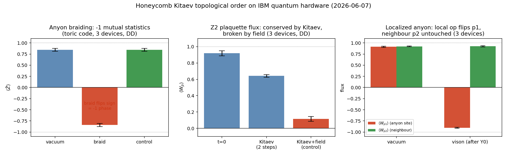
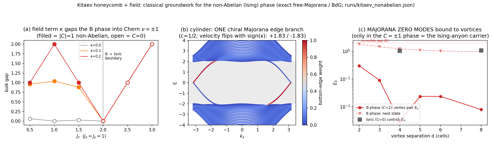

← danielolliver.com · ⬡ the error-hunting game · the six-year story · code & logs
Everything on this page runs a true stabilizer simulation in your browser — the same mechanics as a topological quantum computer. No animations pretending to be physics. And every headline interaction below was verified on real IBM quantum processors — job IDs included.
✓ verified on 3 quantum computersClick a tile to tear a pair of anyons out of the vacuum. Drag one around. Bring it back to its partner and they annihilate. The two meters watch the logical quantum bits stored in the surface’s topology. Try: a small loop around nothing (nothing happens — that’s the protection), then a loop all the way around the torus — the grid wraps — and watch a logical bit flip without ever being touched.
Queued braids run on IBM hardware when the monthly free-tier window refreshes — simulator-gated and budget-capped. Your braid and its measured ⟨Z̄⟩, with the job ID, are posted publicly.
Orange dots are m-anyons living on tiles. The dashed line is logical qubit 1’s readout string — cross it and the meter ticks. This grid is a torus: walk off one edge, return on the other.
A hexagon of six entangled qubits. Five get measured; the angle of the first measurement is the program. At 0° the output is an ordinary (classical-simulable) state. Turn the dial to 45° and the output becomes a magic state — the resource that separates quantum from classical computation. Measurement outcomes are random, yet the program is deterministic — roll the dice and see why.
This page is the playable tip of a year-long research program: ~30 controlled experiments on whether hexagonal/honeycomb structure helps computation — run to a hard rule (no result recorded before its run completes), with matched parameters, controls, and error bars. Highlights:
Topological order on the honeycomb’s Kitaev model: conserved fluxes, a localized anyon, and braiding — the −1 exchange statistics — reproduced on ibm_marrakesh, ibm_kingston and ibm_fez with dynamical decoupling and bootstrap error bars: ⟨Z̄⟩ +0.845 ± 0.030 → −0.843 ± 0.035, control +0.845.

Adding a field opens the Ising-anyon phase: Chern number ±1 (gap matches Kitaev’s 6√3·κ to 4 digits), one chiral Majorana edge branch, and Majorana zero modes bound to vortices. Then braided numerically: exchanges sharing a vortex refuse to commute (‖M−I‖ = 2.57, Ivanov-pattern match 0.975) while disjoint exchanges commute to 0.005 — non-Abelian statistics, end to end.

Stabilizer Rényi entropy across the Kitaev phase diagram: the abelian corner (where the braiding above runs) is the magic-free, classically simulable corner (0.08/qubit); magic climbs ~7× exactly where the non-Abelian phase opens — and the saturation value is log₂(3/2) to the digit, flagging the trivial-phase crossover. Predictions logged before the run: 3/3.
A surface-code neural decoder tied to the code’s exact (twisted) symmetry, at identical parameter count: wins at every training size, ~4× sample efficiency, and reaches the matching-decoder baseline (0.9944 vs 0.9948) where the plain network still lags. Found en route: naive lattice symmetry mis-ties the label — the correct group action carries a syndrome-dependent twist. On the honeycomb Floquet code the symmetry is exact at circuit level and flips the task from unlearnable to learned — play against the trained net →
Hexagonal wiring gives a learning system nothing — falsified across every regime tested (backprop, reservoirs, local rules, scaffolds). The gifts that survived are symmetry (when exactly present and data is scarce) and topology (on real quantum hardware). Knowing exactly where the line sits is the result. The full six-year story →
These aren’t just toys. The braid above and the magic dial were both executed on real superconducting quantum processors — simulator-gated first, error bars from independent machines. Anyone with a free IBM Quantum account can re-run them.
| Interaction | Real-hardware result | Machines / job |
|---|---|---|
| Braid flips the logical | ⟨Z̄⟩ vacuum +0.845 ± 0.030 → braid −0.843 ± 0.035; control loop +0.845 | ibm_marrakesh · ibm_kingston · ibm_fez |
| Anyon is local | tile flips to −0.905 ± 0.010, neighbour untouched at +0.924 ± 0.015 | 3 devices |
| Magic dial at 45° | output on the magic axis, direction overlap 0.999, witness 0.4150 (ideal 0.4150) | d8kdvb832u0s73f8l200 |
Want your own braid on that table? Complete a loop on the board in section 1 and queue it from the panel beside it — the first public braids run when the next hardware window opens. Full methods, code and logs: github.com/dwatces